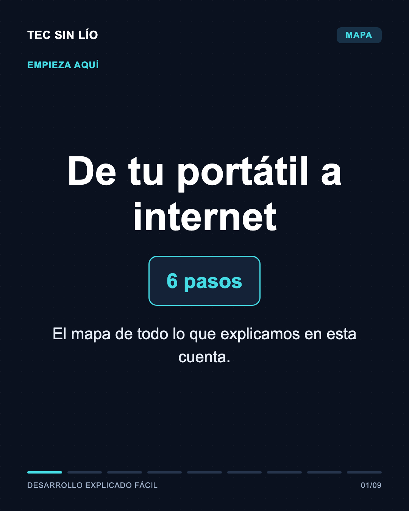
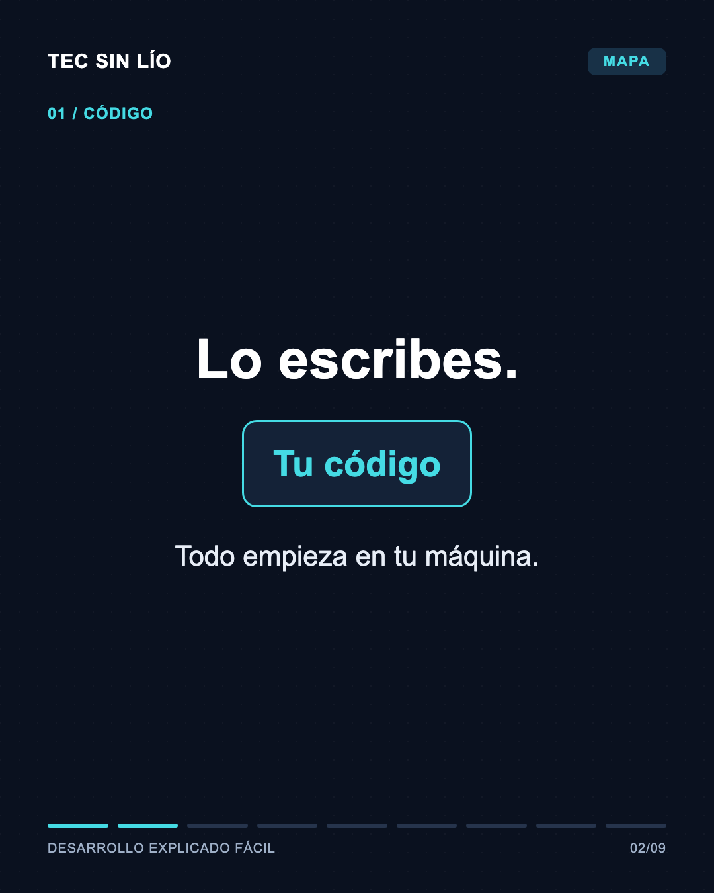
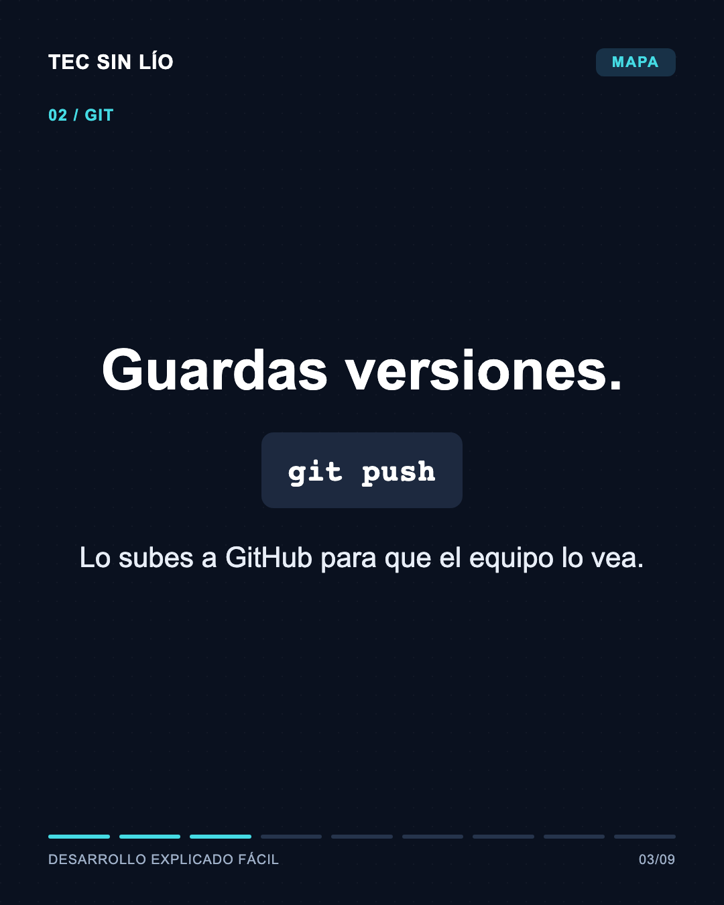
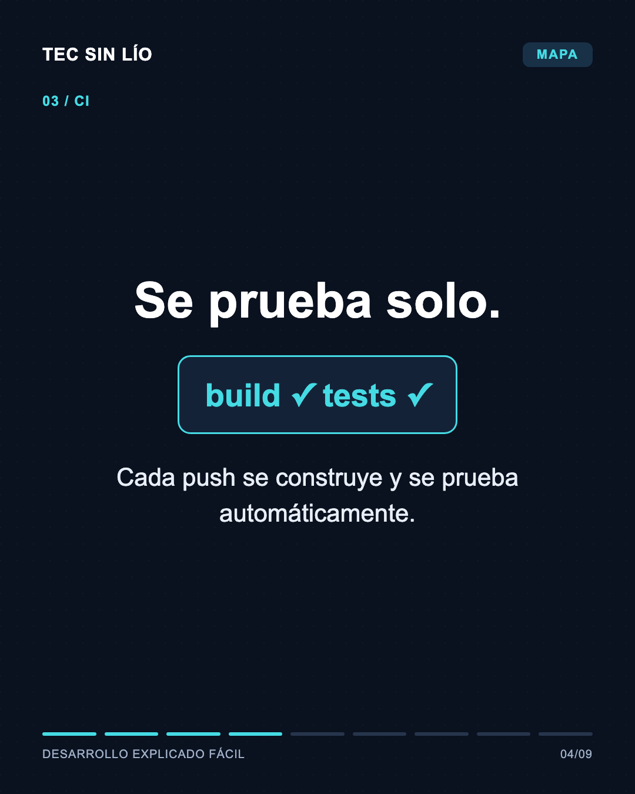
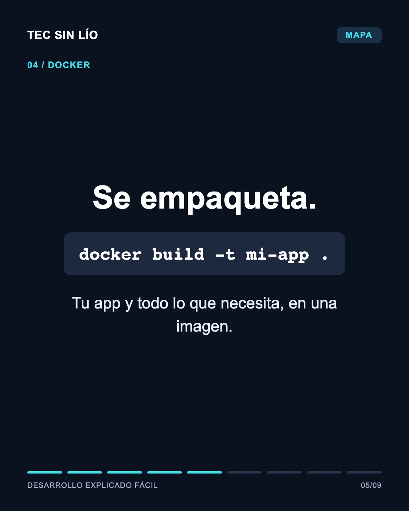
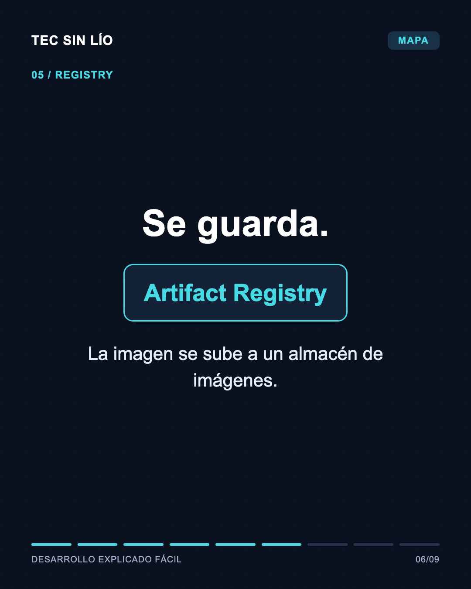
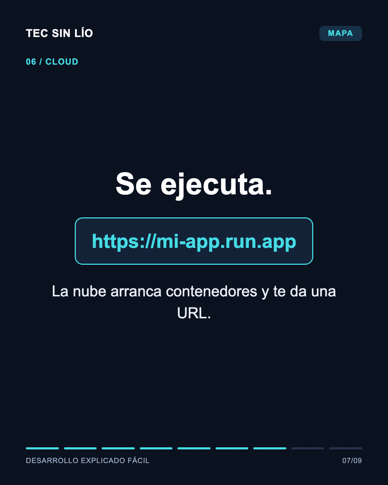
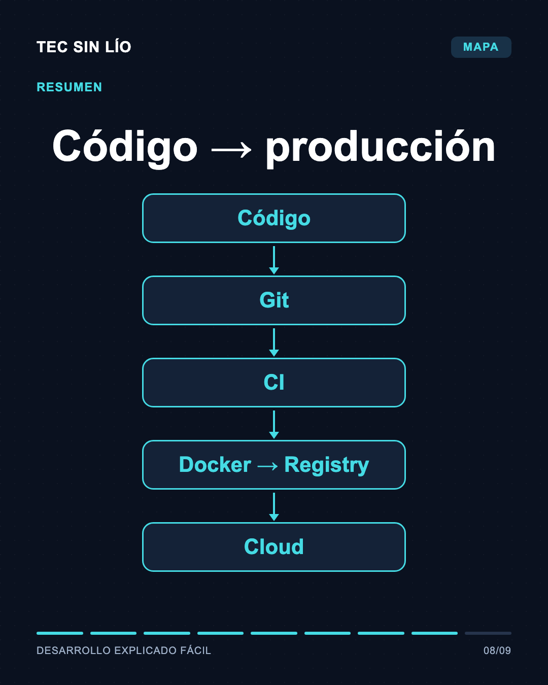
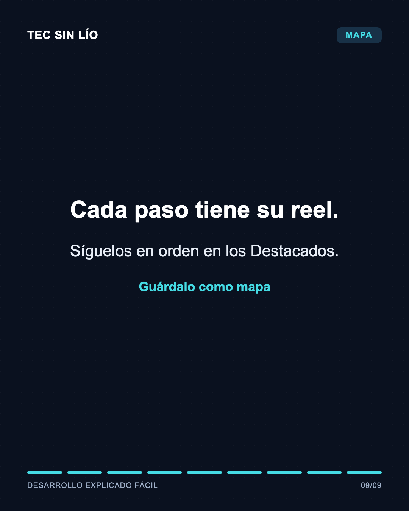

Mapa: de tu código a producción









Caption
¿Cómo llega tu código de tu portátil a internet? 🗺️ 6 pasos, y cada uno tiene su reel en la cuenta. 💾 Guárdalo como mapa 💬 ¿Qué paso te cuesta más? #tecsinlio #programacion #aprendeaprogramar #ingenieriadesoftware #tecnologia #devops #cicd #docker #cloud